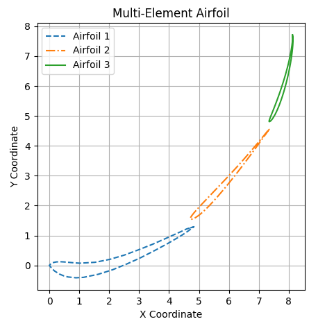
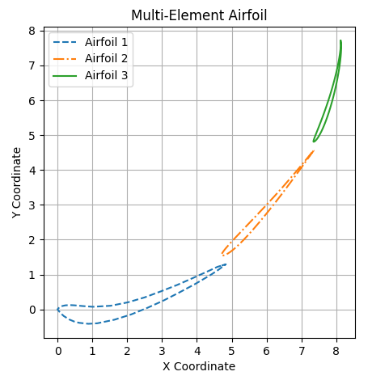

MultiFoil Airfoil Plotter - A Physics-aware Python based multi-element airfoil plotter
 

The Project
I created a Python-based airfoil plotter that plots multi-element (2 or 3 element) wings, with particular applicability for the FSAE competition. The plotter is physics-aware, meaning that it applies research and fluid dynamics principles to auto-optimize the arrangement.
The software is interactive and takes user input. The user selects the chord length of all elements, the angle of attack of the main element, the slot gap between elements, and a steepness factor that acts as a multiplier to the physics-based slope alignment.
The airfoils are selected by inputting the airfoil URL from the Airfoil Database, at which point the software will scrape and process the airfoil coordinate data. It has the ability to automatically convert the imported data into the Selig coordinate format.
Skills Used:
Python, data processing, process automation, numerical analysis (curve fitting, interpolation, smoothing)